首页 > 编程笔记
量子计算机是什么（超级详细）
大家可以回忆一下在小学一年级学习算术时的情景，我们先学习了 0 到 9 这 10 个数字，然后学习了加减乘除四则运算。在日常生活中，我们可以利用这些知识来清点物品的数量、规划时间或者算账。
后来我们又学会了更加复杂的计算方法，知道了计算还可以运用到产品制造、建筑设计和地球环境测量等工作中。不过，上了高中后我们开始意识到，人类的计算能力并没有那么强：对于大数运算，用笔计算 5 位数的乘法已经比较吃力了；图形计算的话，顶多算算圆形或三角形等简单图形的周长和面积；至于位数更多的数或更加复杂的图形，恐怕脑袋里就会一团糟，更是无从下手了。
好在我们可以使用计算器。计算器的种类繁多，这里姑且将所有用于计算的机器统称为计算器。我们最熟悉的计算器当属电子计算器。在电子计算器发明之前，人们使用算盘进行计算。计算器出现后，多位数的运算速度实现了大幅提升。
更复杂的计算还可以使用计算机来完成。学习带有 X 和 Y 等未知数的方程式后，我们可以在不使用具体数字的情况下列出计算公式，然后根据这些公式来编写程序。这样一来，很难通过笔算完成的复杂计算就可以交由计算机来处理了。无论是计算几千位的大数，还是计算复杂的三维图形，只要知道基本的方程式，就能借助计算机求出答案。
计算机是利用电能执行计算的机器，于 1960 年前后开始实际投入使用。它拥有超越人类的计算能力，如今已融入我们的日常生活中。但是，即使是利用电能的计算机，能力也是有限的。
在过去的 60 年间，计算机不断发展，不但实现了高速计算，使用方法也变得越来越简单。然而，人类想要解决的问题也在以同样的速度变得更复杂、更烦琐。对于复杂的三维物体或具有量子力学行为的物质，就算使用当今最先进的计算机也无法轻松执行仿真计算。不可否认，有时候在计算方面，计算机仍力有未逮。近期备受关注的区块链技术正是基于这一事实产生的系统。另一门受到广泛关注的机器学习技术，同样致力于减少求解问题所花费的时间。
因此，突破当今计算机的极限就变得至关重要，人们认为世界将因此变得更加美好。那么，如何才能突破计算机的极限呢？量子计算机无疑是答案之一。
首先，来简单介绍一下什么是量子计算机，笔者将量子计算机定义为一种通过积极利用量子力学特有的物理状态来实现高速计算的计算机。
量子计算机中的“量子”（quantum）正是量子力学中的“量子”。量子力学是在大学阶段开设的一门课程。作为物理学的分支之一，它是为了解释原子和电子等极小物质的运动而发展起来的理论。量子力学告诉我们，在原子、电子和光子（光的粒子）等极小的物质，以及超导物质等冷却至极低温度的物质上会发生不同寻常的神秘现象，而这些现象是可以通过实验证实的。
例如，研究人员已经实现了叠加态和量子纠缠态等量子力学所特有的物理状态。那么，为什么不积极利用这些特有的物理状态来制造计算机呢？正是基于这一想法，量子计算机诞生了。
量子计算机能够执行远超传统计算机计算能力的量子计算。随着研究的深入，与传统计算之间存在本质差别的量子计算的潜力渐渐显露出来。量子计算机的研发，即研发出一种能够通过精确控制量子来突破传统计算机极限的量子计算机，成了物理学和工程学上的一大挑战。
我们在初中和高中的物理课上学过物体的运动、力的作用和电磁场的特性等知识，这些都属于经典物理学的研究范畴。量子力学的研究内容则包括原子和电子的性质等，这些要在大学的某些专业课上才会学到。我们可以认为，经典计算和量子计算分别对应于这两种物理学。这里，我们把执行量子计算的设备称为量子计算机，把执行经典计算的设备，也就是那些常见的普通计算机称为经典计算机。
量子计算向下兼容经典计算，这就意味着任何可以用经典计算机求解的问题都可以用量子计算机求解。对应到物理学上，这就等同于任何可以由经典力学处理的现象（原则上）都可以由量子力学处理（即经典物理学是量子力学的近似）。
此外，人们已经发现，有时借助量子计算机可以快速求解经典计算机难以求解的问题。这一现象对应到物理学上就是量子力学甚至可以处理经典物理学无法处理的现象。
量子计算机目前还没有公认的定义，需要注意的是，虽然普通计算机的运转同样离不开利用了量子力学现象的半导体设备（如晶体管和闪存等），但在其上执行的计算其实还是对应于经典物理学的经典计算。我们需要明确“用于实现的物理现象”与“能够实际执行的计算”之间的区别，仅仅使用了可由量子力学解释的现象并不意味着可以执行量子计算。要想执行量子计算，则需要精确控制可由量子力学解释的现象，并实现所谓的“量子力学特有的物理状态”这一特殊状态。
所谓任意的量子态，是指任意多个量子比特（也称为量子位）的状态。之所以这么说足够高的精度，是因为 100% 转化很困难。
将任意的量子态转换为期望的状态，我们就可以把这种量子计算机称为通用量子计算机。另外，量子比特的数量增加后，所要执行的转换也会变得越来越复杂，噪声的影响也会变大，因此量子计算机必须能够纠正计算过程中出现的错误（具备容错能力）。能够容错的量子计算机称为“具备容错能力的量子计算机”。
名为 NISQ（Noisy Intermediate-Scale Quantum，嘈杂中型量子）的量子计算机就属于此类。这类量子计算机目前正处于研发阶段，尚不具备容错能力（或容错能力较弱）。
量子电路模型在执行计算时使用的是量子电路和量子门，二者取代了经典计算机中使用的电路和逻辑门（logic gate）。该模型自量子计算机研究之初沿用至今，是能够描述通用量子计算的最标准的模型。
1) 初始化量子比特
量子比特是量子计算机中最小的计算单位，是经典计算机中“比特”这一基本概念的量子版本。量子计算机通常会使用通过物理手段制备的量子比特来执行计算。因此，在计算前要先制备并初始化量子比特。
图 7 初始化量子比特
2) 量子化操作
要想实现计算，量子计算机还要对通过物理手段制备好的量子比特进行量子化操作。具体来说，操作量子比特的方法在量子电路模型中称为量子门操作，在量子退火中称为退火操作。
3) 读取计算结果
最后，为了获取计算结果，我们需要测量量子比特的状态（量子态），从中读取计算结果的信息。量子态十分脆弱，在计算过程中，也就是量子化操作执行时，任何多余的测量都会破坏量子态，导致计算结果出错。因此，我们只能在必要的时候小心地对其进行测量。
大致的研发过程是先突破经典计算机的极限，再向着实现量子计算机的方向前进。这个研发过程中间还有几个过渡阶段。
截至目前，某些介于经典计算机和量子计算机之间的设备已经问世，某些设备还在研究当中。本节，笔者将沿此研发路线图介绍量子计算机的各个研发阶段。大家可以以此为参考，了解每种量子计算机的定位。
首先，在经典计算机普及之后，研究人员又开始研发一种能够充分利用量子性的设备。这种设备可称为非经典计算机，量子退火计算机就是其中的一种。这一阶段可谓是尝试在计算过程中引入量子性的初期阶段。
接下来，是证明了经典计算机的计算能力可以被超越的非通用量子计算机阶段。
量子计算机能够高效执行经典计算机难以执行的计算（相较于经典计算机存在优势），这一现象被称为量子霸权（量子优越性）。当前正在研发的量子设备是否能够实现量子霸权是目前的焦点。处于这个阶段的量子计算机尚不具备成熟的容错能力，也无法执行通用的量子计算。因此，只有完善了容错能力，才能实现最终目标——研发出通用量子计算机。
据说通用量子计算机至少还需要 20 年的时间才能研发出来。不过，当前准备阶段的研发工作正在稳步进行，量子退火计算机和名为 NISQ 的设备已经问世。
那么，我们又该如何使用量子计算机呢？
不过，目前我们可以使用的功能非常有限，还没有哪台量子计算机能够突破经典计算机的极限，达到具有一定实用性的水准。
例如，IBM Q 是由 IBM 推出的能够在云上使用的量子计算机，目前已经可以使用 5 个量子比特的量子电路模型和 16 个量子比特的量子电路模型来执行计算。不过，这样的计算能力使用普通的经典计算机（如个人计算机）同样可以实现。
也就是说，具备 5 个量子比特的量子计算机虽然可以归到上述非经典计算机中，但它并没有太大的实用性。如果是实现了 50 个量子比特的量子计算机和 100 个量子比特的量子计算机，那就另当别论了。因此，为了实现性能更高的量子计算机，研究人员正在加紧研发。由于计算量过于庞大，所以即使是当今性能最好的超级计算机，也很难对具备约 50 个高精度量子比特的量子计算机所执行的计算进行模拟。由此可见，量子计算机只有达到了这个等级才能实现量子霸权。
到那时，量子计算机将解决经典计算机难以解决的问题，并成为系统的一部分。请注意，这里说的是量子计算机将被集成到系统中。现阶段，人们普遍认为量子计算机属于专用机器。也就是说，量子计算机仅是一种用于“快速求解某些特定问题”的机器。
从理论上来讲，量子电路模型可以描述通用的量子计算，任何能够由经典计算机完成的计算，同样可以由量子计算机来完成；但实际上，考虑到成本，人们只是暂时使用量子计算机来辅助经典计算机。因此，我们暂时不考虑家家都有量子计算机，或是智能手机上集成了量子计算机等情况。
上图描述的是由超导电路构成的量子计算机，这类量子计算机不仅需要使用一种名为稀释制冷机的大型冷却装置，还需要用到大量的控制装置。我们暂时可以通过云服务来使用这类量子计算机。
在笔者眼中，十年后的计算机的结构将如上图所示。首先，我们会通过无线局域网等方式将身边的个人计算机、智能手机、可穿戴设备（如智能手表和头戴式显示器）和智能家电等设备接入云，与云上的经典计算机相连。这些设备统称为用户界面。当需要执行计算时，我们只要在这些用户界面上操作即可。
这样一来，简单的计算或对处理速度有一定要求的计算可直接在这些设备上执行，复杂的计算或需要与数据库交互的计算则放到云端的经典计算机上执行。
云端上的经典计算机是通用计算机，可以完成规模适中的计算，但对于复杂的计算或大规模的计算，就需要使用其他更擅长计算的计算机来执行了。例如，矩阵计算就交给专门用于矩阵计算的机器，图像处理就交给专门用于图像处理的机器，机器学习就交给专门用于机器学习的机器，等等。量子计算机就是这些专用机器中的一员，专门用来处理它所擅长的问题。
当然，这些只不过是笔者的想象，这里想要传达的观点是人们会以上述方式同时使用量子计算机和经典计算机。
后来我们又学会了更加复杂的计算方法，知道了计算还可以运用到产品制造、建筑设计和地球环境测量等工作中。不过，上了高中后我们开始意识到，人类的计算能力并没有那么强：对于大数运算，用笔计算 5 位数的乘法已经比较吃力了；图形计算的话，顶多算算圆形或三角形等简单图形的周长和面积；至于位数更多的数或更加复杂的图形，恐怕脑袋里就会一团糟，更是无从下手了。
好在我们可以使用计算器。计算器的种类繁多，这里姑且将所有用于计算的机器统称为计算器。我们最熟悉的计算器当属电子计算器。在电子计算器发明之前，人们使用算盘进行计算。计算器出现后，多位数的运算速度实现了大幅提升。
更复杂的计算还可以使用计算机来完成。学习带有 X 和 Y 等未知数的方程式后，我们可以在不使用具体数字的情况下列出计算公式，然后根据这些公式来编写程序。这样一来，很难通过笔算完成的复杂计算就可以交由计算机来处理了。无论是计算几千位的大数，还是计算复杂的三维图形，只要知道基本的方程式，就能借助计算机求出答案。
计算机是利用电能执行计算的机器，于 1960 年前后开始实际投入使用。它拥有超越人类的计算能力，如今已融入我们的日常生活中。但是，即使是利用电能的计算机，能力也是有限的。
在过去的 60 年间，计算机不断发展，不但实现了高速计算，使用方法也变得越来越简单。然而，人类想要解决的问题也在以同样的速度变得更复杂、更烦琐。对于复杂的三维物体或具有量子力学行为的物质，就算使用当今最先进的计算机也无法轻松执行仿真计算。不可否认，有时候在计算方面，计算机仍力有未逮。近期备受关注的区块链技术正是基于这一事实产生的系统。另一门受到广泛关注的机器学习技术，同样致力于减少求解问题所花费的时间。
因此，突破当今计算机的极限就变得至关重要，人们认为世界将因此变得更加美好。那么，如何才能突破计算机的极限呢？量子计算机无疑是答案之一。
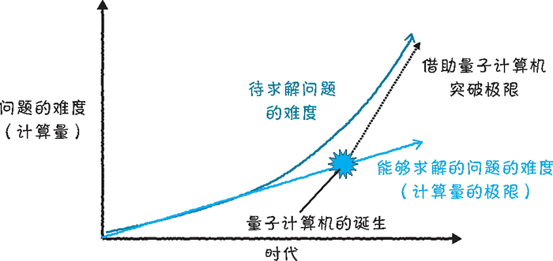
图 1 借助量子计算机突破极限
图 1 借助量子计算机突破极限
量子计算机是什么
目前，研究人员正在积极研发作为下一代高速计算机的量子计算机。对于现代计算机所面临的重重难题，哪怕量子计算机只能解决其中的一小部分，也会给社会带来巨大冲击。首先，来简单介绍一下什么是量子计算机，笔者将量子计算机定义为一种通过积极利用量子力学特有的物理状态来实现高速计算的计算机。
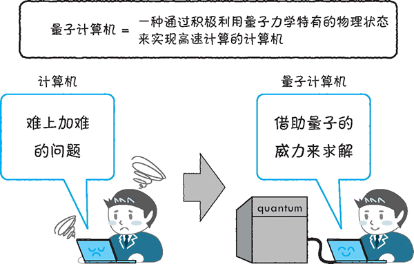
图 2 什么是量子计算机
图 2 什么是量子计算机
量子计算机中的“量子”（quantum）正是量子力学中的“量子”。量子力学是在大学阶段开设的一门课程。作为物理学的分支之一，它是为了解释原子和电子等极小物质的运动而发展起来的理论。量子力学告诉我们，在原子、电子和光子（光的粒子）等极小的物质，以及超导物质等冷却至极低温度的物质上会发生不同寻常的神秘现象，而这些现象是可以通过实验证实的。
例如，研究人员已经实现了叠加态和量子纠缠态等量子力学所特有的物理状态。那么，为什么不积极利用这些特有的物理状态来制造计算机呢？正是基于这一想法，量子计算机诞生了。
量子计算机能够执行远超传统计算机计算能力的量子计算。随着研究的深入，与传统计算之间存在本质差别的量子计算的潜力渐渐显露出来。量子计算机的研发，即研发出一种能够通过精确控制量子来突破传统计算机极限的量子计算机，成了物理学和工程学上的一大挑战。
量子计算机与经典计算机的区别
首先，计算可以大致分为两类：一类是基于同为物理学分支之一的经典物理学的经典计算，另一类就是基于量子力学（这里也可以说是量子物理学。我们在初中和高中的物理课上学过物体的运动、力的作用和电磁场的特性等知识，这些都属于经典物理学的研究范畴。量子力学的研究内容则包括原子和电子的性质等，这些要在大学的某些专业课上才会学到。我们可以认为，经典计算和量子计算分别对应于这两种物理学。这里，我们把执行量子计算的设备称为量子计算机，把执行经典计算的设备，也就是那些常见的普通计算机称为经典计算机。
量子计算向下兼容经典计算，这就意味着任何可以用经典计算机求解的问题都可以用量子计算机求解。对应到物理学上，这就等同于任何可以由经典力学处理的现象（原则上）都可以由量子力学处理（即经典物理学是量子力学的近似）。
此外，人们已经发现，有时借助量子计算机可以快速求解经典计算机难以求解的问题。这一现象对应到物理学上就是量子力学甚至可以处理经典物理学无法处理的现象。
量子计算机目前还没有公认的定义，需要注意的是，虽然普通计算机的运转同样离不开利用了量子力学现象的半导体设备（如晶体管和闪存等），但在其上执行的计算其实还是对应于经典物理学的经典计算。我们需要明确“用于实现的物理现象”与“能够实际执行的计算”之间的区别，仅仅使用了可由量子力学解释的现象并不意味着可以执行量子计算。要想执行量子计算，则需要精确控制可由量子力学解释的现象，并实现所谓的“量子力学特有的物理状态”这一特殊状态。
量子计算机的类型
可以将量子计算机分为以下三种类型，如下图所示：
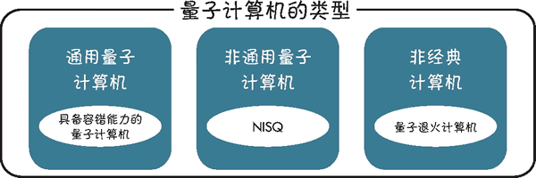
图 3 量子计算机的类型
图 3 量子计算机的类型
1) 通用量子计算机
通用量子计算机可以执行任意的量子计算。解释得更详细一点，就是通用量子计算机能够以足够高的精度将一种任意的量子态转换为另一种任意的量子态。所谓任意的量子态，是指任意多个量子比特（也称为量子位）的状态。之所以这么说足够高的精度，是因为 100% 转化很困难。
将任意的量子态转换为期望的状态，我们就可以把这种量子计算机称为通用量子计算机。另外，量子比特的数量增加后，所要执行的转换也会变得越来越复杂，噪声的影响也会变大，因此量子计算机必须能够纠正计算过程中出现的错误（具备容错能力）。能够容错的量子计算机称为“具备容错能力的量子计算机”。
2) 非通用量子计算机
非通用量子计算机无法执行任意的量子计算，即只能执行部分量子计算，但它也表现出了优于经典计算机的一面。名为 NISQ（Noisy Intermediate-Scale Quantum，嘈杂中型量子）的量子计算机就属于此类。这类量子计算机目前正处于研发阶段，尚不具备容错能力（或容错能力较弱）。
3) 非经典计算机
非经典计算机使用（或旨在使用）量子力学特有的物理状态执行计算，但尚未表现出优于经典计算机的一面。目前正在研发的量子退火计算机就属于此类。量子计算模型的类型
计算模型指的是描述计算执行方式的模型。上面从硬件角度介绍了量子计算机的分类。此外，计算也有类型之分，这里将量子计算模型分为通用型和专用型两类。通用型
通用型模型可以描述所有量子计算，量子电路模型就是一种典型的通用型模型。除此以外，还有多种在计算量上等效的模型尚处于研究阶段，比如基于测量的量子计算、绝热量子计算和拓扑量子计算等。量子电路模型在执行计算时使用的是量子电路和量子门，二者取代了经典计算机中使用的电路和逻辑门（logic gate）。该模型自量子计算机研究之初沿用至今，是能够描述通用量子计算的最标准的模型。
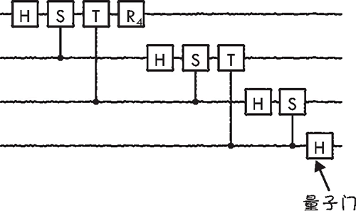
图 4 量子电路模型
图 4 量子电路模型
专用型
专用型模型可以描述特定的计算。有一种名为量子退火的计算模型，是专门用于计算伊辛模型基态的计算模型，解决问题的方式是将问题映射到伊辛模型。
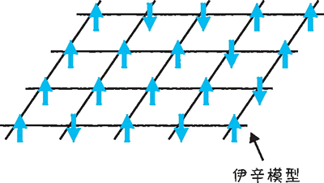
图 5 伊辛模型
图 5 伊辛模型
量子计算机的基础
相信大家已经对量子计算机有了大致印象，接下来我们看一下量子计算机的工作机制。量子计算机的操作流程
首先来看量子计算机的基本操作流程。下图展示的基本操作既可用于量子电路模型，也可用于量子退火。下面，笔者就按这三步来说明在量子计算机上执行计算的方法。
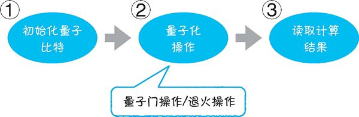
图 6 量子计算机的基本操作
图 6 量子计算机的基本操作
1) 初始化量子比特
量子比特是量子计算机中最小的计算单位，是经典计算机中“比特”这一基本概念的量子版本。量子计算机通常会使用通过物理手段制备的量子比特来执行计算。因此，在计算前要先制备并初始化量子比特。
图 7 初始化量子比特
2) 量子化操作
要想实现计算，量子计算机还要对通过物理手段制备好的量子比特进行量子化操作。具体来说，操作量子比特的方法在量子电路模型中称为量子门操作，在量子退火中称为退火操作。
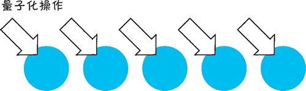
图 8 量子化操作
图 8 量子化操作
3) 读取计算结果
最后，为了获取计算结果，我们需要测量量子比特的状态（量子态），从中读取计算结果的信息。量子态十分脆弱，在计算过程中，也就是量子化操作执行时，任何多余的测量都会破坏量子态，导致计算结果出错。因此，我们只能在必要的时候小心地对其进行测量。
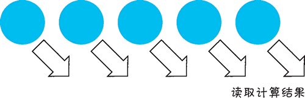
图 9 读取计算结果
图 9 读取计算结果
量子计算机的研发路线图
下图是量子计算机的研发路线图：
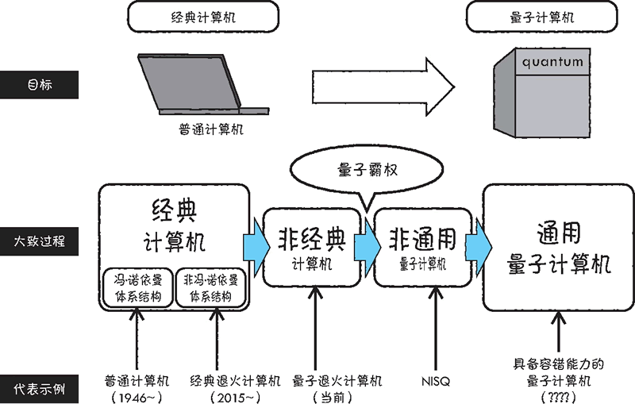
图 10 实现通用量子计算机的过程
图 10 实现通用量子计算机的过程
大致的研发过程是先突破经典计算机的极限，再向着实现量子计算机的方向前进。这个研发过程中间还有几个过渡阶段。
截至目前，某些介于经典计算机和量子计算机之间的设备已经问世，某些设备还在研究当中。本节，笔者将沿此研发路线图介绍量子计算机的各个研发阶段。大家可以以此为参考，了解每种量子计算机的定位。
首先，在经典计算机普及之后，研究人员又开始研发一种能够充分利用量子性的设备。这种设备可称为非经典计算机，量子退火计算机就是其中的一种。这一阶段可谓是尝试在计算过程中引入量子性的初期阶段。
接下来，是证明了经典计算机的计算能力可以被超越的非通用量子计算机阶段。
量子计算机能够高效执行经典计算机难以执行的计算（相较于经典计算机存在优势），这一现象被称为量子霸权（量子优越性）。当前正在研发的量子设备是否能够实现量子霸权是目前的焦点。处于这个阶段的量子计算机尚不具备成熟的容错能力，也无法执行通用的量子计算。因此，只有完善了容错能力，才能实现最终目标——研发出通用量子计算机。
据说通用量子计算机至少还需要 20 年的时间才能研发出来。不过，当前准备阶段的研发工作正在稳步进行，量子退火计算机和名为 NISQ 的设备已经问世。
量子计算机的未来
经典计算机的种类繁多，从超级计算机这种大型计算机到台式机、笔记本式计算机、智能手机、可穿戴设备等小型计算机，都属于经典计算机。我们可以根据用途，从中挑选最合适的使用。那么，我们又该如何使用量子计算机呢？
量子计算机的现状
目前，量子计算机的研发处于非经典计算机的阶段，一些设备正在通过云端进行试用，并且已经有几家公司正在搭建可试用非经典计算机的环境。不过，目前我们可以使用的功能非常有限，还没有哪台量子计算机能够突破经典计算机的极限，达到具有一定实用性的水准。
例如，IBM Q 是由 IBM 推出的能够在云上使用的量子计算机，目前已经可以使用 5 个量子比特的量子电路模型和 16 个量子比特的量子电路模型来执行计算。不过，这样的计算能力使用普通的经典计算机（如个人计算机）同样可以实现。
也就是说，具备 5 个量子比特的量子计算机虽然可以归到上述非经典计算机中，但它并没有太大的实用性。如果是实现了 50 个量子比特的量子计算机和 100 个量子比特的量子计算机，那就另当别论了。因此，为了实现性能更高的量子计算机，研究人员正在加紧研发。由于计算量过于庞大，所以即使是当今性能最好的超级计算机，也很难对具备约 50 个高精度量子比特的量子计算机所执行的计算进行模拟。由此可见，量子计算机只有达到了这个等级才能实现量子霸权。
量子霸权是指量子计算机能够体现出相较于经典计算机的优越性。
量子计算机的使用方法
我们试着展望未来，想象一下非通用量子计算机和量子加速已经实现的情景。到那时，量子计算机将解决经典计算机难以解决的问题，并成为系统的一部分。请注意，这里说的是量子计算机将被集成到系统中。现阶段，人们普遍认为量子计算机属于专用机器。也就是说，量子计算机仅是一种用于“快速求解某些特定问题”的机器。
从理论上来讲，量子电路模型可以描述通用的量子计算，任何能够由经典计算机完成的计算，同样可以由量子计算机来完成；但实际上，考虑到成本，人们只是暂时使用量子计算机来辅助经典计算机。因此，我们暂时不考虑家家都有量子计算机，或是智能手机上集成了量子计算机等情况。
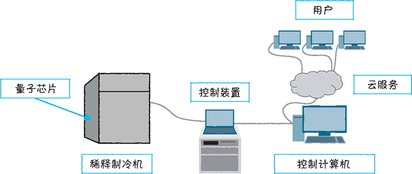
图 11 由超导电路构成的量子计算机的示意图
图 11 由超导电路构成的量子计算机的示意图
上图描述的是由超导电路构成的量子计算机，这类量子计算机不仅需要使用一种名为稀释制冷机的大型冷却装置，还需要用到大量的控制装置。我们暂时可以通过云服务来使用这类量子计算机。
展望未来的计算环境
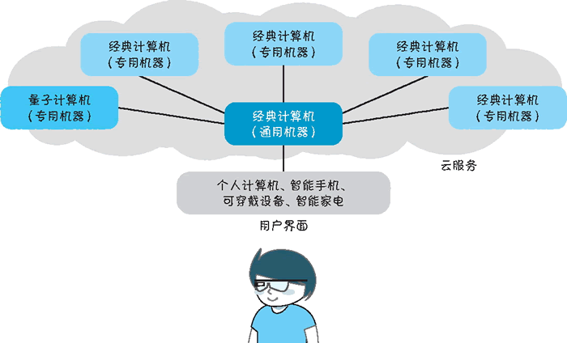
图 12 十年后的计算机
图 12 十年后的计算机
在笔者眼中，十年后的计算机的结构将如上图所示。首先，我们会通过无线局域网等方式将身边的个人计算机、智能手机、可穿戴设备（如智能手表和头戴式显示器）和智能家电等设备接入云，与云上的经典计算机相连。这些设备统称为用户界面。当需要执行计算时，我们只要在这些用户界面上操作即可。
这样一来，简单的计算或对处理速度有一定要求的计算可直接在这些设备上执行，复杂的计算或需要与数据库交互的计算则放到云端的经典计算机上执行。
云端上的经典计算机是通用计算机，可以完成规模适中的计算，但对于复杂的计算或大规模的计算，就需要使用其他更擅长计算的计算机来执行了。例如，矩阵计算就交给专门用于矩阵计算的机器，图像处理就交给专门用于图像处理的机器，机器学习就交给专门用于机器学习的机器，等等。量子计算机就是这些专用机器中的一员，专门用来处理它所擅长的问题。
当然，这些只不过是笔者的想象，这里想要传达的观点是人们会以上述方式同时使用量子计算机和经典计算机。
关注公众号「站长严长生」，在手机上阅读所有教程，随时随地都能学习。内含一款搜索神器，免费下载全网书籍和视频。

微信扫码关注公众号